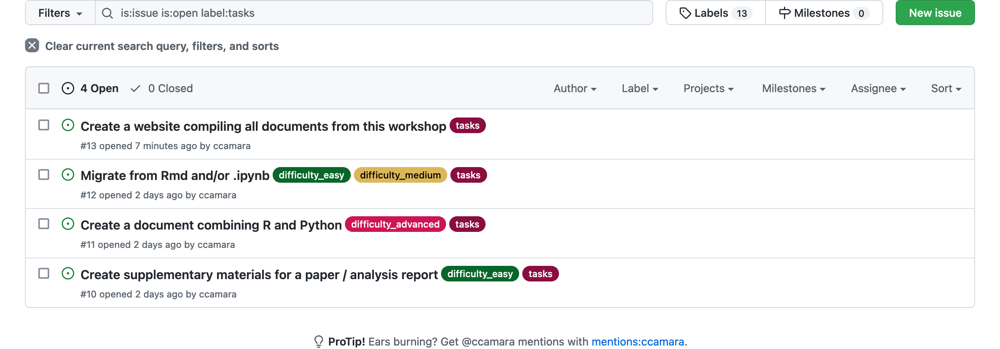

library(leaflet)
leaflet() %>%
addTiles() %>% # Add default OpenStreetMap map tiles
addMarkers(lat=54.9734625, lng=-1.6242486, popup="RSECon 2022")Quarto:
A library to run them all?
RSE Conference 2022 | Newcastle Upon Tyne
Centre for Interdisciplinary Methodologies (University of Warwick) | IT Services (University of Warwick)
How does it work? (Overview)
From a qmd file…
---
title: "ggplot2 demo"
author: "Norah Jones"
date: "5/22/2021"
format:
html:
fig-width: 8
fig-height: 4
code-fold: true
---
## Air Quality
@fig-airquality further explores the impact of temperature
on ozone level.
```{r}
#| label: fig-airquality
#| fig-cap: Temperature and ozone level.
#| warning: false
library(ggplot2)
ggplot(airquality, aes(Temp, Ozone)) +
geom_point() +
geom_smooth(method = "loess"
)
```Anatomy:
- Frontmatter defintions
- Content
- Text (Markdown with batteries)
- Code blocks
… to its output.

In this case, an html document (line 6) with text, code (folded -see line 9) and output.
Does this look familiar to you?
How can quarto be called?
From CLI:
quarto --help
Usage: quarto
Version: 0.9.563
Description:
Quarto CLI
Options:
-h, --help - Show this help.
-V, --version - Show the version number for this program.
Commands:
render [input] [args...] - Render input file(s) to various document types.
preview [file] [args...] - Render and preview a document or website project.
serve [input] - Serve a Shiny interactive document.
create-project [dir] - Create a project for rendering multiple documents
convert <input> - Convert documents to alternate representations.
pandoc [args...] - Run the version of Pandoc embedded within Quarto.
run [script] [args...] - Run a TypeScript, R, Python, or Lua script.
tools <command> [tool] - Installation and update of ancillary tools.
check [target] - Verify correct functioning of Quarto installation.
help [command] - Show this help or the help of a sub-command. From your favourite IDE:


Group formation and cases
- Choose a case from the (case list) on GitHub
2. Each case has a place in the room. Please go to the place for your corresponding case.
3. Form groups of 4 or 5. Say hi to your new friends
4. Choose Documentors and Spokesperson
